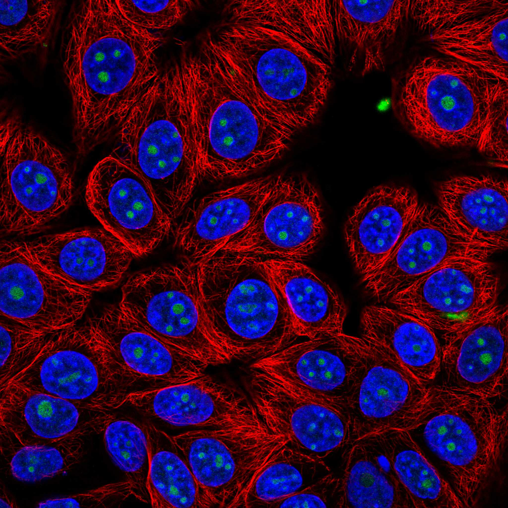
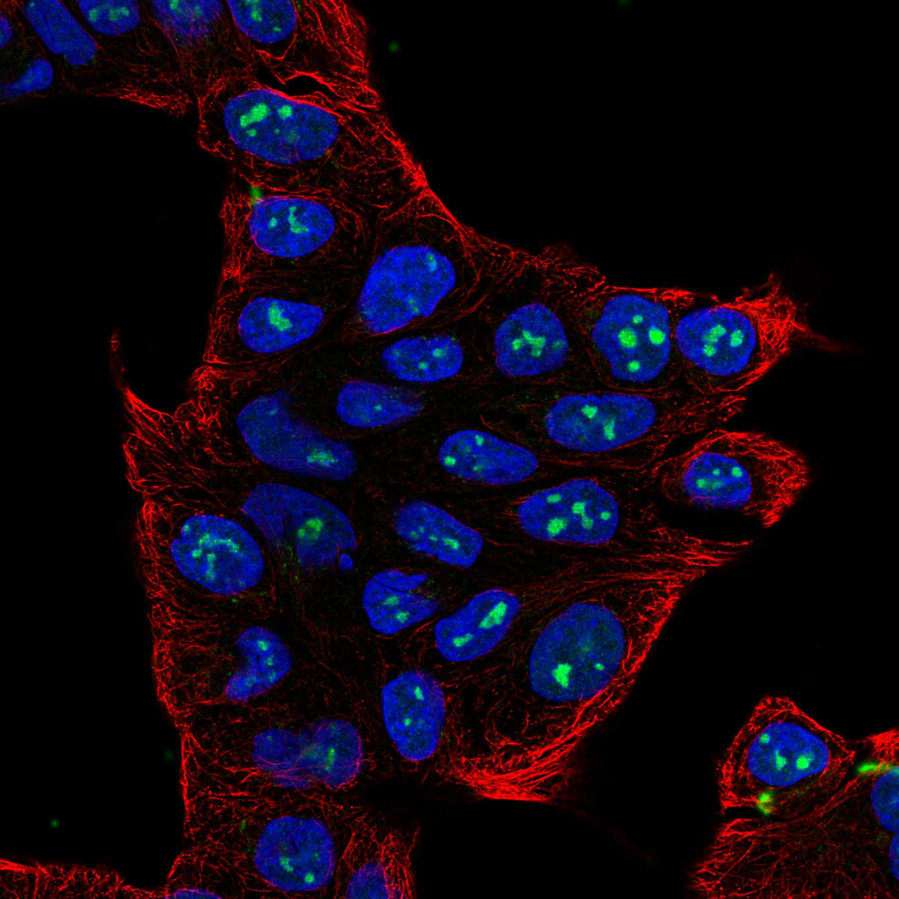
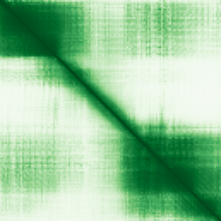

type: protein-evaluation gene: "LLPH" date: 2026-05-30 tags: [protein-scout, nuclear-protein, evaluation] status: scored ---
LLPH 核蛋白评估报告
1. 基本信息
| 项目 | 内容 |
|---|---|
| 基因名 | LLPH |
| 蛋白大小 | 129 aa |
| UniProt ID | Q9BRT6 (Protein LLP homolog) |
| 子定位分类 | nucleolus |
| 评估日期 | 2026-05-30 |
IF 图像:  
2. 评分总览
| 维度 | 得分 | 满分 | 加权后 | 关键证据摘要 |
|---|---|---|---|---|
| 🔴 核定位特异性 | 10/10 | ×4 | 40 | Nucleus, nucleolus(ECO:0000250); Chromosome(ECO:0000269) |
| 📏 蛋白大小 | 8/10 | ×1 | 8 | 129 aa |
| 🆕 研究新颖性 | 10/10 | ×5 | 50 | PubMed 16 篇 |
| 🏗️ 三维结构 | 7/10 | ×3 | 21 | AlphaFold pLDDT 74.44, v6 |
| 🧬 调控结构域 | 7/10 | ×2 | 14 | IPR018784(LLP homolog-like) |
| 🔗 PPI 网络 | 5/10 | ×3 | 15 | 见 3.6 PPI 分析 |
| ➕ 互证加分 | — | max +3 | +1.0 | 多源数据互证 |
| 原始总分 | 149/183 | |||
| 归一化总分 | 81.4/100 |
3. 详细分析
3.1 核定位证据
| 来源 | 定位 | 可信度 |
|---|---|---|
| UniProt | Nucleus, nucleolus(ECO:0000250); Chromosome(ECO:0000269) | — |
| Protein Atlas (IF) | 暂无数据（HPA IF 图像已本地嵌入。
结论: LLPH Nucleus, nucleolus(ECO:0000250); Chromosome(ECO:0000269)。核定位评分 10/10。
3.2 蛋白大小评估
129 aa。蛋白偏小。评分: 8/10。
3.3 研究现状
| 指标 | 数值 |
|---|---|
| PubMed 总数 | 16 |
| 搜索策略 | "LLPH"[Title/Abstract] |
已知复合体成员 (GO Cellular Component):
- （待补充：通过 GO 数据库查询该蛋白所属的已知复合体）
关键文献: 1. Susanto et al. (2024). "RAPIDASH: Tag-free enrichment of ribosome-associated proteins reveals composition dynamics in embryonic tissue, cancer cells, and macrophages.". *Mol Cell*. PMID: 39260367 2. Zong et al. (2023). "Extracellular vesicles long RNA profiling identifies abundant mRNA, circRNA and lncRNA in human bile as potential biomarkers for cancer diagnosis.". *Carcinogenesis*. PMID: 37696683 3. Susanto et al. (2023). "RAPIDASH: A tag-free enrichment of ribosome-associated proteins reveals compositional dynamics in embryonic tissues and stimulated macrophages.". *bioRxiv*. PMID: 38106052 4. Durán et al. (2024). "Evaluation of aldosterone to direct renin ratio, low renin and related Phenotypes in Afro-Colombian patients with apparent treatment resistant hypertension.". *Sci Rep*. PMID: 39103362 5. Zeng et al. (2023). "Multi-omics data reveals novel impacts of human papillomavirus integration on the epigenomic and transcriptomic signatures of cervical tumorigenesis.". *J Med Virol*. PMID: 37212325 评价: PubMed 16 篇。极度新颖，几乎未被研究。评分: 10/10。
3.4 三维结构分析
| 指标 | 数值 |
|---|---|
| AlphaFold 平均 pLDDT | 74.44 |
| pLDDT < 50 (无序) | 20.2% |
| AlphaFold 版本 | v6 |
PAE 图: 
评价: AlphaFold 中等质量预测，pLDDT 74.44。评分: 7/10。
3.5 结构域分析
| 来源 | 结构域 |
|---|---|
| InterPro | IPR018784(LLP homolog-like) |
染色质调控潜力分析: IPR018784(LLP homolog-like)。评分: 7/10。
3.6 PPI 网络
实验验证互作 (IntAct, physical association):
| Partner | 方法 | PMID | 功能类别 | 调控相关？ | |
|---|---|---|---|---|---|
| LYAR | psi-mi:"MI:0006"(anti bait coi | pubmed:17353931 | — | — | |
| psi-mi:ssrna_uc(display_short) | psi-mi:"MI:0096"(pull down) | pubmed:23902751 | imex:IM-21740 | — | — |
| Ctcf | psi-mi:"MI:0676"(tandem affini | imex:IM-11719 | pubmed:20360068 | — | Yes |
| SRPK3 | psi-mi:"MI:0676"(tandem affini | pubmed:23602568 | imex:IM-17935 | — | — |
| RPS6 | psi-mi:"MI:1314"(proximity-dep | pubmed:29568061 | imex:IM-26301 | — | — |
| psi-mi:polg_zikvk(display_long | psi-mi:"MI:0007"(anti tag coim | pubmed:30177828 | imex:IM-26452 | — | — |
STRING 预测互作 (combined score >0.4):
| Partner | Score | 功能类别 | 调控相关？ |
|---|---|---|---|
| RPL30 | 0.894 | — | — |
| ZNF593 | 0.890 | — | — |
| RSL24D1 | 0.868 | — | — |
| NMD3 | 0.861 | — | — |
| GNL2 | 0.860 | — | — |
| EIF6 | 0.849 | — | — |
| RPL36AL | 0.849 | — | — |
| RPL7A | 0.847 | — | — |
PPI 互证分析:
- STRING top partner: RPL30 (score: 0.894)
- IntAct interactions: 15 total
- PPI 评分: 5/10
PPI 数据源补充核查（自动审计）
IntAct/BioGrid 实验互作核查:
| Partner | 方法 | PMID |
|---|---|---|
| — | two hybrid pooling approach | 16189514 |
| — | anti bait coimmunoprecipitation | 17353931 |
| — | pull down | 23902751 |
| — | tandem affinity purification | 20360068 |
| — | tandem affinity purification | 23602568 |
| — | proximity-dependent biotin identification | 29568061 |
| — | anti tag coimmunoprecipitation | 30177828 |
| — | tandem affinity purification | 31527615 |
| — | pull down | 30833792 |
| — | tandem affinity purification | 31527615 |
STRING 预测/整合互作核查:
| Partner | Score |
|---|---|
| RPL30 | 0.894 |
| ZNF593 | 0.890 |
| RSL24D1 | 0.868 |
| NMD3 | 0.861 |
| GNL2 | 0.860 |
| EIF6 | 0.849 |
| RPL36AL | 0.849 |
| RPL7A | 0.847 |
| GTPBP4 | 0.845 |
| RPL14 | 0.843 |
GO-CC 复合体/定位核查:
- GO:0005694: chromosome (IDA:UniProtKB)
- GO:0005730: nucleolus (IDA:HPA)
补充结论: PPI 评分仍以报告评分表为准；本节用于补齐 IntAct、STRING、GO-CC 三源审计证据。
3.7 多库互证
| 维度 | 来源 | 结果 | 是否一致 |
|---|---|---|---|
| 三维结构 | AlphaFold v6 | pLDDT 74.44 | — |
| 结构域 | InterPro | IPR018784(LLP homolog-like) | — |
| 定位 | UniProt | Nucleus, nucleolus(ECO:0000250); Chromosome(ECO:0000269) | — |
| PPI | STRING + IntAct | RPL30 等 | — |
互证加分明细: +1.0 / max +3
4. 总体评价
推荐等级: ⭐⭐⭐ (3/5)
核心优势: 1. 极度新颖: PubMed 16 篇 2. 中等质量 AlphaFold 结构: pLDDT 74.44
风险/不确定性: 1. 核定位需 HPA/IF 实验验证 2. 染色质/TE 调控功能缺乏直接实验证据
下一步建议:
- [ ] 使用 HPA/IF 确认 LLPH 的核定位
- [ ] 在 TEreg 相关细胞系中检测 LLPH 表达水平
- [ ] 通过 co-IP/MS 鉴定 LLPH 的染色质调控相关互作伙伴
5. 数据来源
- UniProt: https://www.uniprot.org/uniprotkb/Q9BRT6
- PubMed: https://pubmed.ncbi.nlm.nih.gov/?term=LLPH%5BTitle/Abstract%5D
- AlphaFold: https://alphafold.ebi.ac.uk/entry/Q9BRT6
- InterPro: https://www.ebi.ac.uk/interpro/protein/uniprot/Q9BRT6/
- STRING: https://string-db.org (API, species=9606)
- IntAct: https://www.ebi.ac.uk/intact/
PAE 图像已获取。结构判断基于 AlphaFold pLDDT 统计。